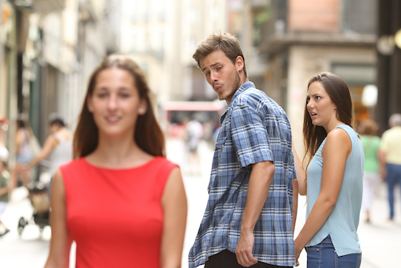

From a conversation with Charlie Sextro
Published on May 9, 2017
I think a film is a lot of different kinds of relationships, all conglomerated together. It’s intense. I would say though, because I have said it before, that this new film, The Bad Batch, does feel like someone that I was in love with. Like an entity I fell madly, madly in love with. And it’s that kind of romantic love, like soul-mate love, that drives me to do what I do for the three years that making a film requires.
I always feel it afterwards too, because at some point in the edit, I start writing the script to the next film. It’s almost as if you’re married, and you start looking at other people. You know what I mean? I feel very, very empty and panicky deep in my soul when I’m finishing one film about to start the next one. That between moment is the worst.
When you are writing the story, it’s mad love. It’s not like a civilized, logical, reasonable love. It’s the kind of love that makes you, wanna fuckin’ build a pyramid. Stupid love.
Then they are their ideal versions which is just my imagination. It’s great. That’s like, pure delusion. That’s the best kind of love. When the script is done and it’s just mine, that time is so precious. It’s a hard time for me, writing a script. I don’t have anybody to blame. Whatever problems aren’t getting solved, it’s just all on me. So, it’s intense, but it’s also very satisfying and peaceful.
It’s probably one of the most freeing times for me, when you journey through the process, because it’s like this moving, evolving thing. I think my fantasy is almost like a doorway. And then you get to go in and actually see it. It’s not like I fully know what it’s going to be, because then you get stuff you didn’t even imagine. And it’s incredible. It starts filling itself out. That’s the thing—a film is alive. Once everyone is making decisions, it starts to come alive. And it tells you what it wants. Then you start going out, finding locations, finding people, and it’s like each one of those is a love thing. If it’s all driven from the original motivation, it’s just a boner maker.
That’s like the ultimate point. That’s the point always. The greatest thing about the boner is that you don’t actually know what’s gonna give it to you. It’s fun to see what is going to give you a boner.
The script—that’s the biggest one. Because, honestly, it’s this story and these characters you’re living with. You better fuckin’ love the shit out of it all and really want them to exist because they’re going to. You’re gonna have to fuckin’ talk to them and answer questions. So that’s the biggest boner. That’s the boner from which all the rainfall boners come. You know, it’s like a trickle down effect.
People can feel that too. You know what I mean? It’s a difference of like, when someone’s hugging you and they know you have a rock hard fuckin’ boner, versus like, “Oh yeah,” just really not that into it. But I definitely am aware if there’s no boner or the anti-boner. When I don’t feel anything, I don’t fake it.
Absolutely. It’s so true. From my perspective, directing a film is like—maybe at least 75% of the time—a seduction. You’re seducing everybody, every department head, constantly. And it has to be genuine. Otherwise, it’s just dry, monotonous, and it’s not inspired. You know the way people behave when they’re in love, when they’re inspired and turned on? They become greater.
It’s months of preparation. I spend months with my production designer, picking out every detail meticulously. I also spend months with my costume designer. So, it’s months of excitement about every decision and choice that you’re making. I don’t ever say “Yeah, yeah, you choose,” about anything in a movie. I don’t know how many movies I’ll be able to make that way either because it’s ridiculous. It’s an insane level of reckless passion.
I think I have four movies worth. I have two more movies worth of that level of passion. Like, time with the actors, that’s a different thing. I look at certain filmmaker’s first four films, and the shift in age, budget, infrastructure, and just the way it’s like… so different. There’s an aliveness. I don’t know. That’s not a negative or positive it’s more an observation of the filmmakers that I love. When you get more money, it does affect how insular you can be. And it affects how everyone’s going to work together.
It depends on the moment and the people and what’s going on. There’s no blanket approach. If you’re talking about being on set, some days it involves a very particular energy. Time is ticking, the sun is setting. If you’re in the middle of nowhere in the desert dealing with elements and birds. I’m like Mel Gibson in Braveheart. It’s war. Everybody’s gotta get ready to fuckin’ throw down.
It’s funny because I remember the first day of tech scouting for The Bad Batch. We’re out in the desert. I took the crew there—the camera department, sound, my stunt guy, all the department heads. I made a speech about how basically for the next however many weeks it’s like, “We’re making a porno, and I’m the porn star. I’m basically gonna be gang-banging a bunch of people every day. And I love my job and I’m gonna make everyone get off. But, imagine if you’re having sex with a bunch of people in front of everybody, how would you feel if you’re getting fucked or fucking someone and you look over and someone’s texting on the phone? How would that make you feel?” I’m not gonna say no cell phones, because that’s ridiculous in this day and age, but if I’m within eye-shot don’t fuckin’ text. I’m trying to get orgasms here.